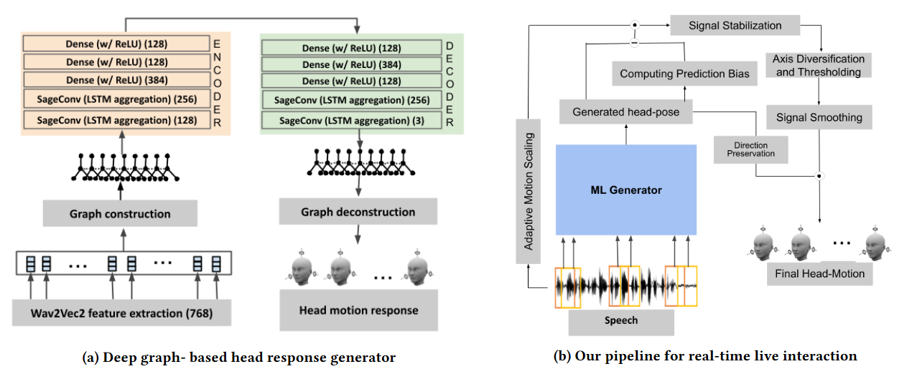

Active Listener Live: Real-time Head Response Generation in Virtual Agents during Live Spoken Interaction
Bishal Ghosh,
Tongfei Bian,
Emma Li and
Tanaya Guha University of Glasgow, UK,
papercode

Abstract
A key component of dyadic interactions is the contextually-relevant behavioural cues, such as head gestures, that a listener produces in response to an interlocutor`s speech. However, generating such listening behaviour for an embodied Virtual Agent (VA) in real time is challenging. Existing real time head response generators are still rule-based, and the data driven models are not fit for real time use. We propose real-time, listener`s head response generation framework, called the Active Listener, that responds to a human speaker with appropriate head responses during spoken interactions. The framework comprises: (i) an online deep graph-based head pose generator that is completely data-driven and trained without any manual labels, and (ii) design and development of a VA that responds in real time to user`s speech using the generator as its backbone. Along with validating the head response generator using objective metrics, we design and conduct a thorough subjective evaluation of the Active Listener by deploying it in real world user interaction. Our results show that 73% of the users prefer Active Listener over two competing baselines in terms of diversity and context-relevance of the generated head responses.
Video demonstration
Raw Output
Processed Output
Baseline comparison
Positive Prompt
Proposed model
MaAI baseline
PRG baseline
Neutral Prompt
Proposed model
MaAI baseline
PRG baseline
Negative Prompt
Proposed model
MaAI baseline
PRG baseline
Citation
@article{yourpaper,
title={Your Paper Title},
author={Your Name}
}